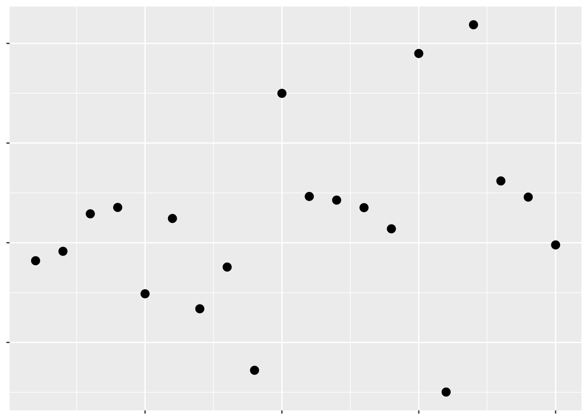
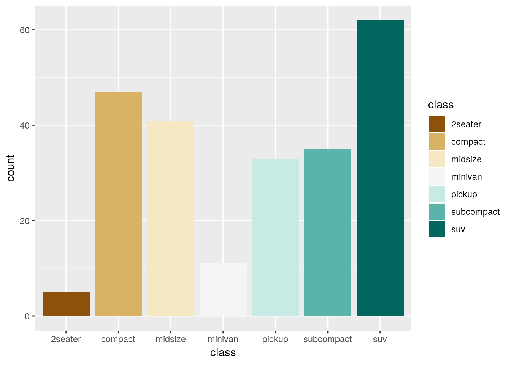

7 Achieving Graphical Excellence
7.1 Work in Progress
library(tidyverse)## -- Attaching packages ------------------------------------------------------------------------ tidyverse 1.2.1 --## v ggplot2 3.0.0 v purrr 0.2.4
## v tibble 1.4.2 v dplyr 0.7.4
## v tidyr 0.8.0 v stringr 1.3.0
## v readr 1.1.1 v forcats 0.3.0## -- Conflicts --------------------------------------------------------------------------- tidyverse_conflicts() --
## x dplyr::filter() masks stats::filter()
## x dplyr::lag() masks stats::lag()https://www.jstor.org/stable/2288400?seq=1#metadata_info_tab_contents
http://vis.stanford.edu/files/2010-MTurk-CHI.pdf
Look at this scatterplot: 
Hopefully we can already tell that this isn’t a great graph. The complete lack of text means we have no idea what data are being visualized, or what the takeaway message is supposed to be. Remember, graphs are for storytelling and demonstrating your point, not necessarily for giving exact values - you should include tables in your document if the exact values are important.
Even so, we can tell just from this scatterplot which points have larger values than others - they’re the ones further up and to the right. That’s because we’ve been trained to see position as an ordered aesthetic in graphs.
Position isn’t the only way to communicate which values are larger than others. For instance, if we want to show the level of a third variable, we can use color:

Which of these have a larger value of that third variable?
Most people would assume the darker colors have the larger values, due to their higher contrast with the background. If we make the contrast less obvious, it becomes much harder to tell what the color is supposed to convey:

But at the same time, even contrast isn’t quite enough for us to automatically interpret a color in a graph. For instance, the rainbow colors have different amounts of contrast against a white background, but when plotted:

Which values are higher now?
Humans make connections between different colors based on their luminance and chroma. We won’t go wading too far into what those terms mean; but it’s important to understand that the actual colors you use to compare values matter less than the differences in their shade and intensity.
Moving away from color, we can also use other aesthetics to communicate a third variable. For instance:

Which values are larger?
We have one last aesthetic that we can use to show our third variable - the shape of the points:

Which values are larger?
As we can see, some aesthetics communicate quantitative data very well, while others should only be used for qualitative purposes. We already knew this - we touched on it in our first unit. But getting a sense of what representations are appropriate for our data - and what sorts of things we’re able to do with it - is the first step towards creating worthwhile graphics for whatever business or research purpose you have.
For the rest of this unit, we’ll be working through all the various controls that ggplot (and other R packages) give us over our data visualizations. While you’ll still likely have to google some solutions for your own particular problems, this unit should give you a good idea of what’s possible with R graphics.
Many of these solutions will make use of ggplot extensions, documented at this website.
7.2 Themes
Take, for example, the basic graph:
ggplot(mpg, aes(cty, hwy)) +
geom_point(aes(color = class))
This graph works fine - it’s not particularly attractive, but we can understand what’s going on decently well.
However, if we wanted to further control each element of our graph, we’re more than able to do so using theme(), alongside a few other functions. Below is a demonstration of some of the most commonly used theme elements - but there’s a whole world of possibilities beyond what we’ll get into here. This is a situation where Google is your best friend - googling “how do I ____ ggplot” almost always gets the right answer to your question.
Generally speaking, arguments inside of theme() all follow a general pattern. First, you specify what plot element exactly you want to tweak - usually named plot.XX.XX or so on. Then, you specify what type of object it is - element_rect() for rectangular elements, element_line() for lines on the plot, element_text() for, well, text, and element_blank() for anything you want to not be included at all.
I’ve explained what each action below does in comments (using ##). You can choose different specifications for almost everything I demonstrated - these are just examples to give you an understanding of what you’re capable of controlling.
## Create the ggplot object
ggplot(mpg, aes(cty, hwy)) +
scale_color_discrete(
## Change the default name for the legend
name = "Vehicle Class",
## Change the default name for each legend object
## anything you don't include will become NA
labels = c("Two Seater",
"Compact",
"Midsize",
"Minivan",
"Pickup",
"Subcompact",
"SUV")) +
theme(
## Remove the margins around the plot - useful when embedding the plot in another document
## Numbers are the top/right/bottom/left margin
## Change "in" to use a different unit
plot.margin = unit(c(0,0,0,0), "in"),
## Change the background of the larger plot itself
plot.background = element_rect(fill = "beige"),
## Replace the grey background with a white one
panel.background = element_rect(fill = "white"),
## Add an x axis line
axis.line.x.bottom = element_line(color = "black"),
## Add a y axis line
axis.line.y.left = element_line(color = "black"),
## Make the text size 10
text = element_text(size = 10),
## Make the axis text size 10 and black
axis.text = element_text(size = 10, color = "black"),
## Replace that ugly grey box with a white background
legend.key = element_rect(fill = "white"),
## Recolor the legend box's background
legend.background = element_rect(fill = "grey"),
## Move the legend to the top of the graph
legend.position = "top",
## Add gridlines to the graph along the axis major breaks
## Use panel.grid for both major and minor lines
## Or panel.grid.minor to just do minor lines
## This is our last argument in theme()
panel.grid.major = element_line(color = "grey90")) +
## Override the other aesthetics for the color legend
## In this case, make the points larger in the legend than the graph
guides(color = guide_legend(override.aes = list(size = 3))) +
## Change the x and y axis labels
labs(x = "City Miles per Gallon",
y = "Highway Miles per Gallon") +
## Create a larger red point behind each compact car to highlight their location
geom_point(data = filter(mpg, class == "compact"), size = 3, color = "red") +
## Plot the data on top of the theme and highlights
geom_point(aes(color = class)) +
## Control the x axis
## Expand = how far past the limits to draw the graph
## Limits = where to end the axis
## Breaks = where to draw tick marks and grid lines
scale_x_continuous(
expand = c(0,0),
limits = c(0,41),
breaks = c(0, 5, 10, 15, 20, 25, 30, 35, 40))
You can also save your basic preferences into a function of their own, and then add that to your graphs. This makes preparing multiple graphs for publications or presentations much easier - you save a ton of code replication this way.
theme_publishable <- theme(
plot.background = element_rect(fill = "white"),
panel.background = element_rect(fill = "white"),
axis.line.x.bottom = element_line(color = "black"),
axis.line.y.left = element_line(color = "black"),
text = element_text(size = 10),
axis.text = element_text(size = 10, color = "black"),
legend.key = element_rect(fill = "white"),
legend.background = element_rect(fill = "white"),
panel.grid.major = element_line(color = "grey90"))
ggplot(mpg, aes(cty, hwy)) +
geom_point(data = filter(mpg, class == "compact"), size = 3, color = "red") +
geom_point(aes(color = class)) +
scale_color_discrete(
name = "Vehicle Class",
labels = c("Two Seater",
"Compact",
"Midsize",
"Minivan",
"Pickup",
"Subcompact",
"SUV")) +
labs(x = "City Miles per Gallon",
y = "Highway Miles per Gallon") +
guides(color = guide_legend(override.aes = list(size = 3))) +
scale_x_continuous(
expand = c(0,0),
limits = c(0,41),
breaks = c(0, 5, 10, 15, 20, 25, 30, 35, 40)) +
theme_publishable
(As a sidenote, I usually have pretty similar themes for printed and presented graphics. The biggest difference comes in text sizes - for presentations, the text argument becomes size 24, while the axis text becomes size 20.)
If this is all a little intimidating, don’t worry - a lot of people have developed packages with handcrafted themes in them for you to use. For instance, in addition to the cowplot package we’ve been using, there’s ggthemes, which includes a number of palettes and themes - I’m only demonstrating one below:
install.packages("ggthemes")ggplot(mpg, aes(cty, hwy)) +
geom_point(aes(color = class)) +
labs(x = "City Miles per Gallon",
y = "Highway Miles per Gallon") +
guides(color = guide_legend(override.aes = list(size = 3))) +
scale_x_continuous(
expand = c(0,0),
limits = c(0,41),
breaks = c(0, 5, 10, 15, 20, 25, 30, 35, 40)) +
ggthemes::theme_pander() 
7.3 Colors
As we showed above, the colors you use in a graph can really help - or hinder! - communicating your data. Luckily, there’s plenty of aids in R to help you use color effectively. Just remember that more color isn’t always better - for instance, look at this graph:

It’s colorful, sure, but the colors don’t add any information to the graph - if anything, they confuse the message. You should be sparing in your use of color - as the old saying goes:
Everything should be made as simple as possible - but no simpler.
7.3.1 Viridis
One of the most popular color scale packages is the viridis color scale, designed to provide colorblind-friendly color scales for your graphics. More information on the available palettes may be found here.
To use the palettes, just load ``viridisand addscale_color_viridisto your graph, specifying which palette you want withoption = ```.
install.packages("viridis")ggplot(mpg, aes(cty, hwy)) +
geom_point(aes(color = displ)) +
viridis::scale_color_viridis(option = "C")
In order to apply the viridis palette to a discrete scale, just specify discrete = TRUE:
ggplot(mpg, aes(cty, hwy)) +
geom_point(aes(color = class)) +
viridis::scale_color_viridis(discrete = TRUE)
7.3.2 Color Brewer
If you want a few more options for color scales, the RColorBrewer package offers plenty of choices. Originally designed to help make attractive maps, the Color Brewer paettes offer palettes designed to be printer and colorblind friendly. You can see the full list of palettes at the interactive Color Brewer website.
To use the package with discrete values, just type in scale_color_brewer() or scale_fill_brewer() and specify your palette:
install.packages("RColorBrewer")ggplot(mpg, aes(cty, hwy)) +
geom_point(aes(color = class)) +
scale_color_brewer(palette = "Dark2")
If you want to use the Brewer scales with continuous values, just use scale_color_distiller():
ggplot(mpg, aes(cty, hwy)) +
geom_point(aes(color = displ)) +
scale_color_distiller(palette = "PuRd")
7.3.3 Other Packages
Plenty of other packages include color scales for you to use. For instance, the ggthemes package we used earlier has a number of color scales to choose from:
ggplot(mpg, aes(cty, hwy)) +
geom_point(aes(color = class)) +
ggthemes::scale_color_pander()
Similarly, ggsci has a lot of journal-specific and academic color scales for use:
install.packages("ggsci")ggplot(mpg, aes(cty, hwy)) +
geom_point(aes(color = class)) +
ggsci::scale_color_lancet()
7.3.4 Making Your Own
Of course, you aren’t restricted to the scales put together by others! If you want, you can use any of the many options in ggplot to put together scales of your own. In particular, scale_color_manual() lets you specify colors for each level you want colored, while scale_color_gradient() lets you create a gradient by specifying the low and high value colors. Both of these functions have fill versions, as well.
ggplot(mpg, aes(cty, hwy)) +
geom_point(aes(color = displ)) +
scale_color_gradient(low = "orange", high = "purple")
If you’re looking to specify your own colors by hand, I find sites like ColorSupply to be extremely helpful.
7.4 Combining Geoms
7.4.1 Marginal Plots
7.5 Labels
7.6 Animation
paper on silencing ## Specialized Visualizations ### Slope Charts ### Maps ### Circlize Pie charts are much maligned, but do have some benefits over bar plots - for instance, if you’re trying to represent proportional data, pie charts perform better than stacked or dodged column charts. While ggplot doesn’t include a native method for making pie charts, the circlize library can be used to ### ggridges
github commenting your code